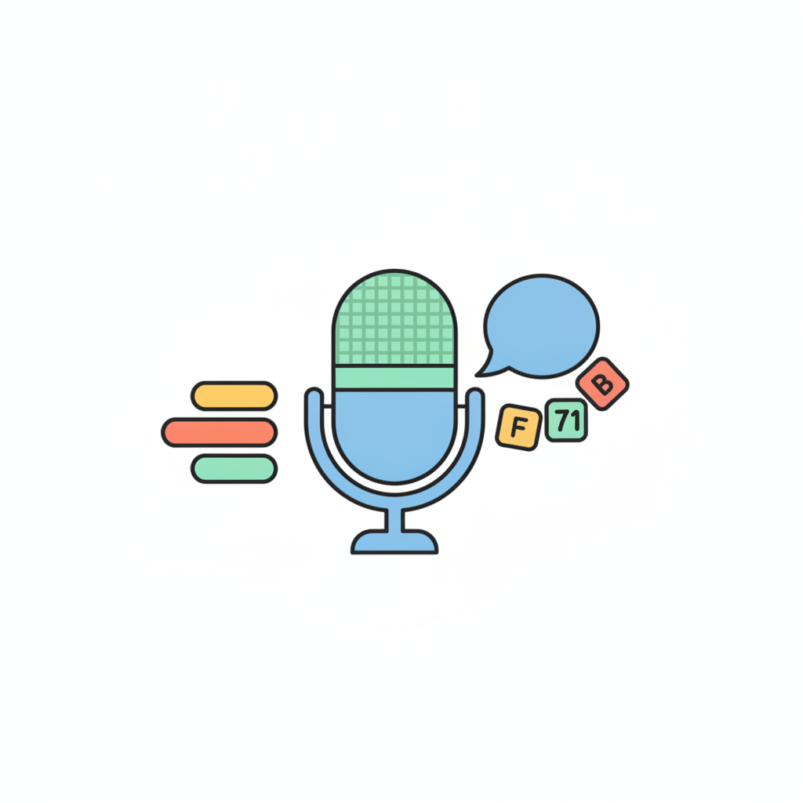

둘 다 "불을 켜는" 프로그램이에요. 무엇이 다른지 직접 비교해 봐요.

🛡️ 이름·주소 같은 개인정보는 말하지 않아요. 내 목소리는 화면에만 쓰이고 저장되지 않아요.
센서처럼 소리의 크기만 재요. 무슨 말인지는 몰라요. 박수를 치거나 아무 말이나 크게 하면 불이 켜져요.
빨간 선(기준)을 넘으면 켜져요
버튼을 누르고 소리를 내 봐요
학습된 AI가 말의 내용을 글자로 바꿔요. 등록된 명령어 불 켜 줘불 꺼 줘 와 맞을 때만 실행돼요.
버튼을 누르고 명령을 말해요
| 구분 | Ⓐ 소리 크기 반응 | Ⓑ 음성 인식 |
|---|---|---|
| 무엇을 보나요? | 소리의 크기 | 말의 내용(단어, 문장) |
| 프로그램 활용 | 크기에 따른 조건 | 사용자의 명령어에 따른 조건 |
| 판단 방법 | 센서를 활용한 측정 | 학습된 데이터로 단어, 문장을 찾기 |